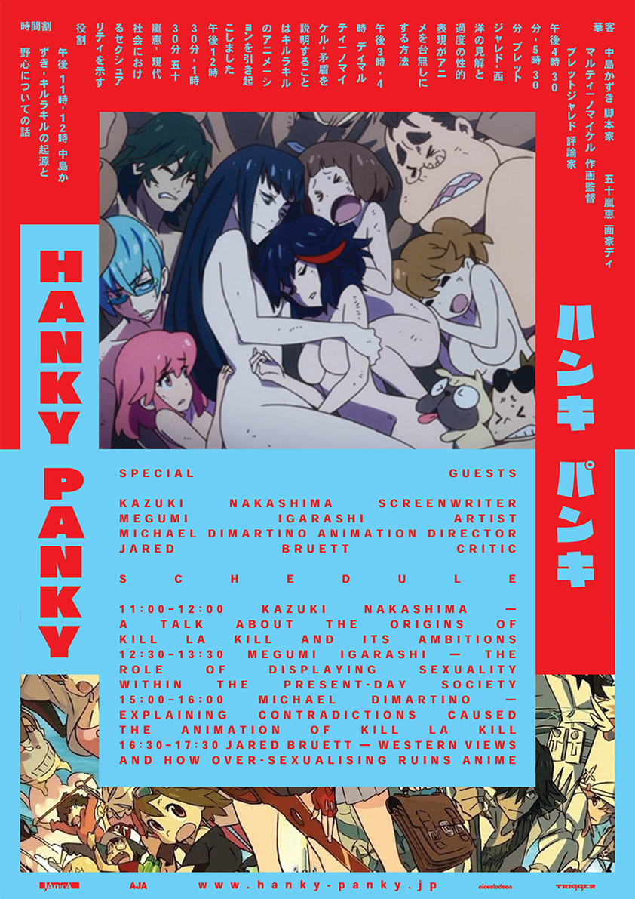
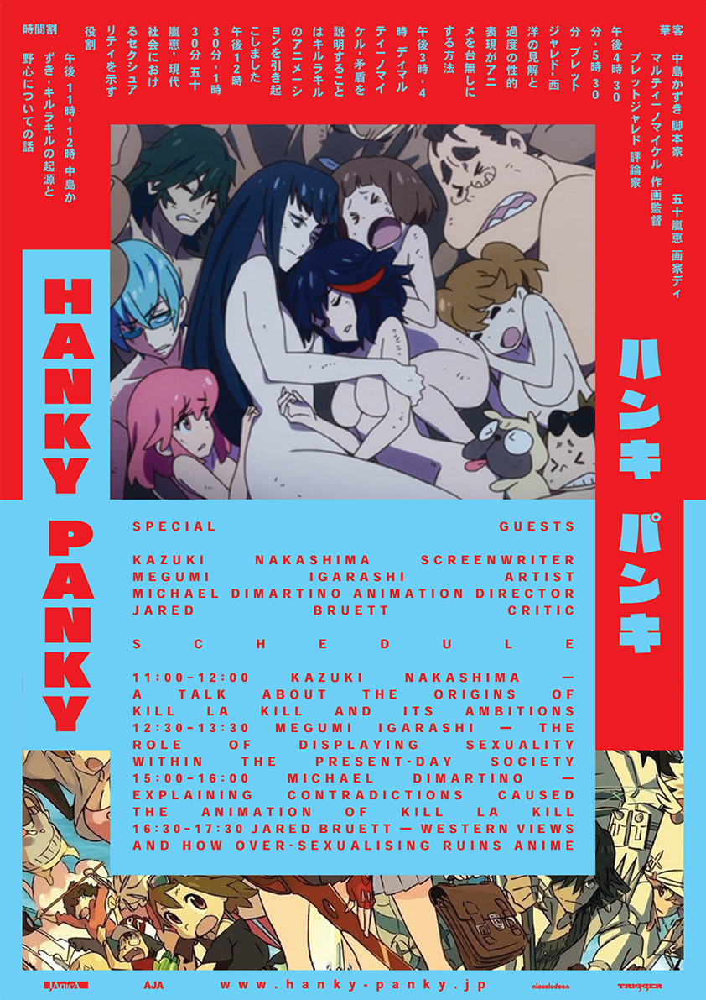
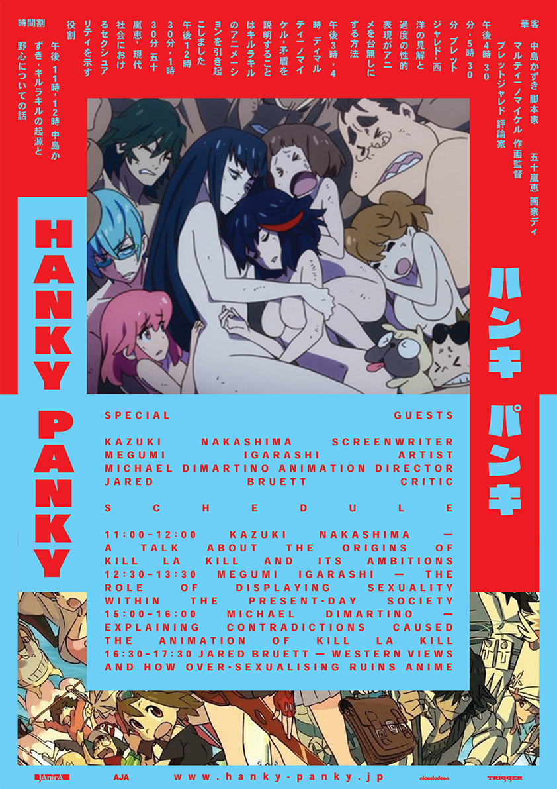
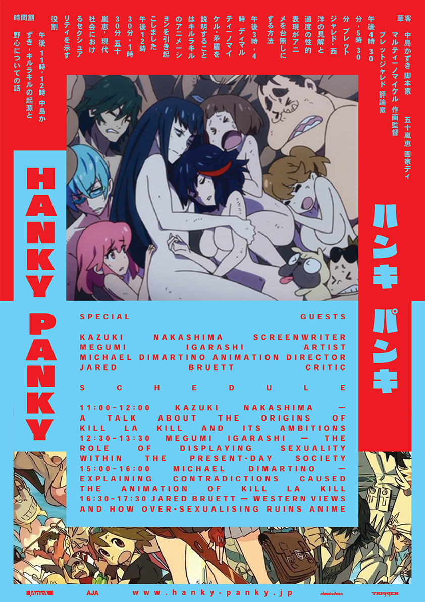
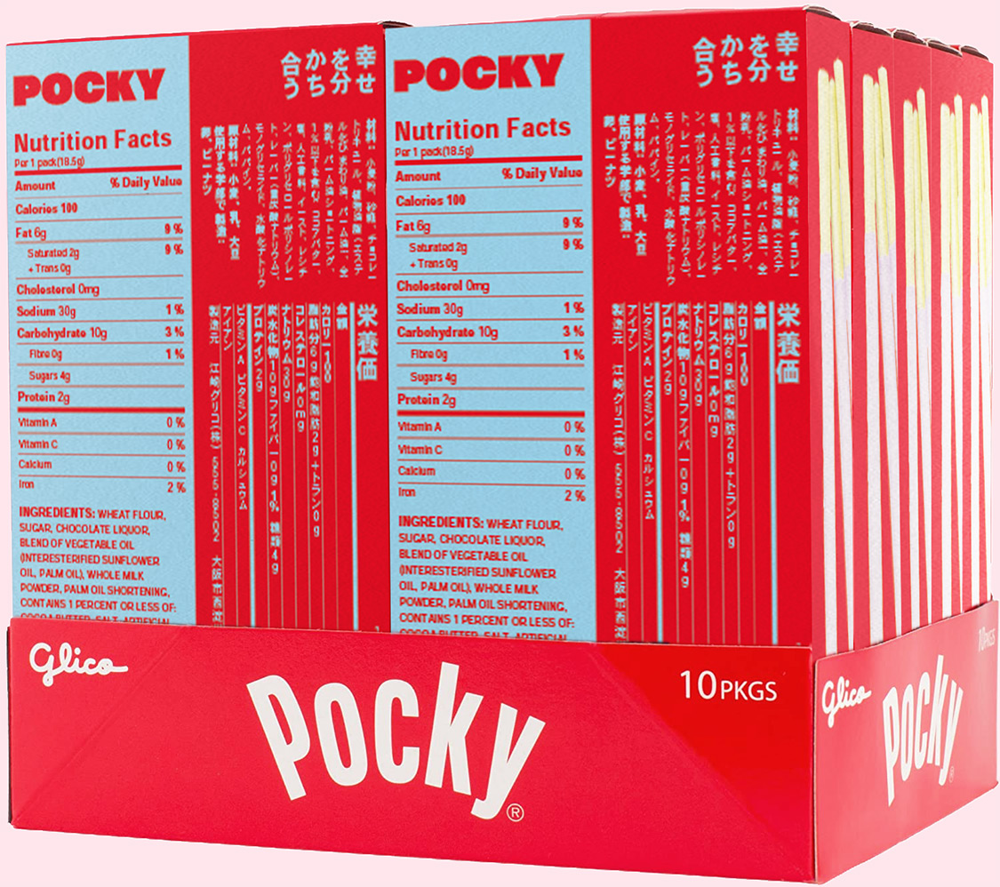
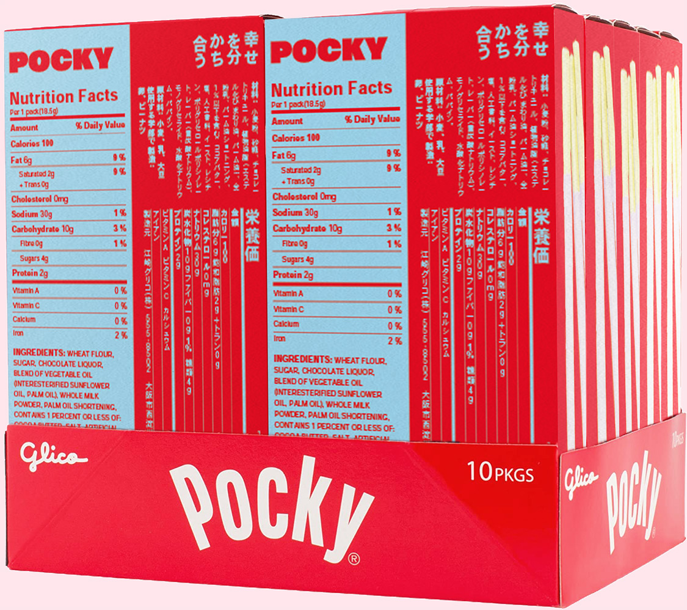

 

Hanky-Panky is a thought-up conference about oversexualization
of female anime characters. I created all of the tiny details, such as the main theme for the 2022 conference, location, speakers
and topics they will be discussing, etc.
The main purpose, though, was not to make a fantasy world,
but create a fitting visual language for it through a tedious research and development process.
As the main theme of this year’s conference is the anime called Kill la Kill, a lot of visual elements were taken from it to form
the design. The Raglan-Punch typeface, which is always stretched to fit the frame in the series, and the main contrasting colors, signifying the opposition of two sides.


Kill la Kill is an anime, which was supposed to be something sexually empowering, but the camerawork and female character design made it to be the opposite in the eyes of the masses.
There are many opinions about this topic, and the 2022 Hanky-Panky is supposed to be an event, dedicated to presenting these opinions to the wider audience and letting the western creators
and critics have a chance to state their position, as well as,
listen to what the authors of Kill la Kill and other representatives
of Japanese culture have to say.
With the use of my visual language, I created the announcement
and schedule posters. I also employed it for the pocky packaging, which is the merch item for this conference. The design system
is applicable to a multitude of things.
The process of creating the visual language involved a lot of research. For the Japanese content I used vertical typesetting, traditional to manga, while the English half is set horizontally,
left to right. For the sake of doing that, I had to learn how to do this right, both in terms of treating the content and using the Japanese typesetting functionality in Indesign. I also conducted research
on the use of frames in Japanese poster, which makes
the placement of content more engaging and readable.